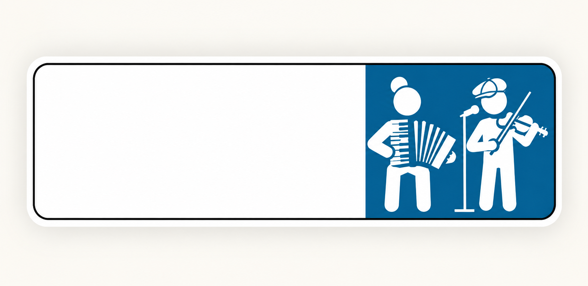

Programmation
Inviter A’Cha Lou
Pour proposer une date, contactez le duo via Facebook ou Instagram.
Accordéon piano · Violon · Chant
Deux musiciens avec une même envie : faire vivre les mélodies traditionnelles avec énergie, complicité et plaisir.
Voir les concerts
A’Cha Lou réunit un accordéoniste et un violoniste chanteur autour d’un répertoire de musique traditionnelle. Une musique vivante, généreuse et faite pour la rencontre — sur scène comme sur le parquet.
Pour proposer une date, contactez le duo via Facebook ou Instagram.
Concert, bal, festival, programmation ou simplement envie de suivre A’Cha Lou ?